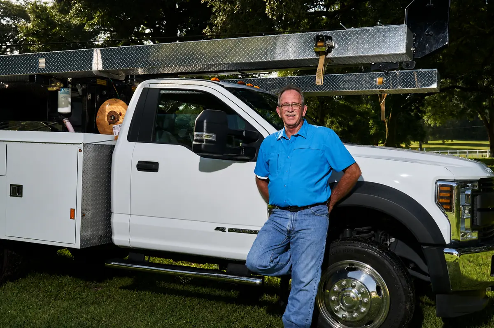
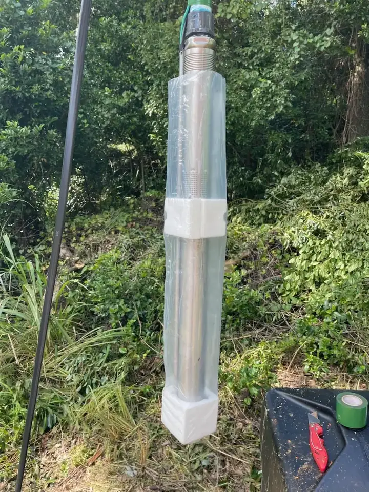
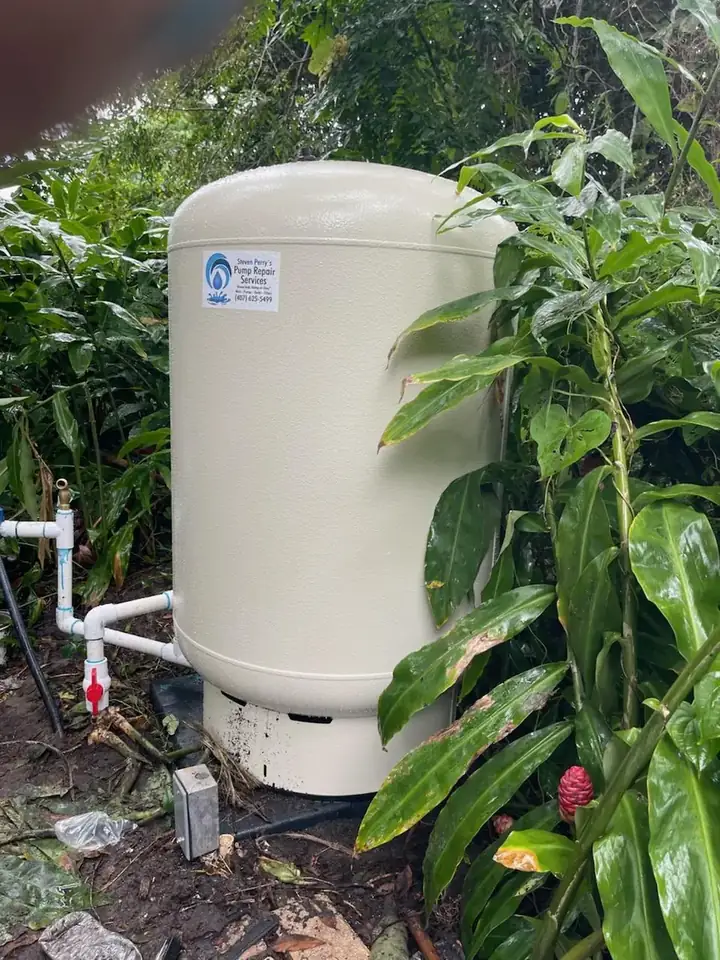
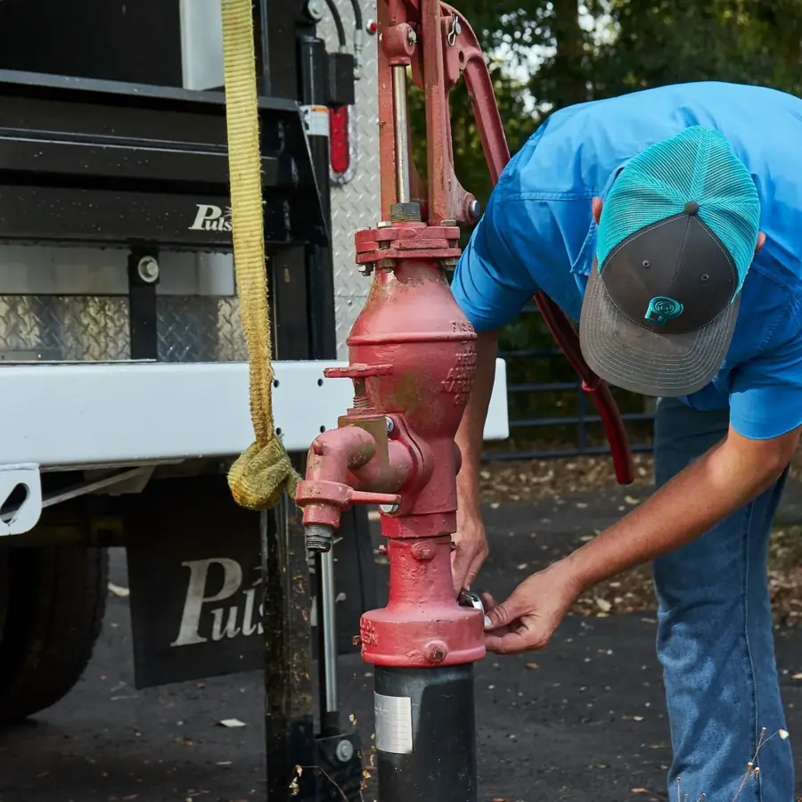
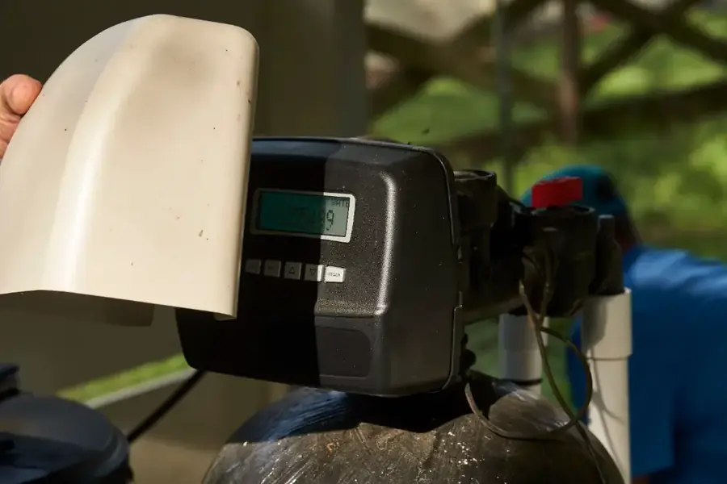
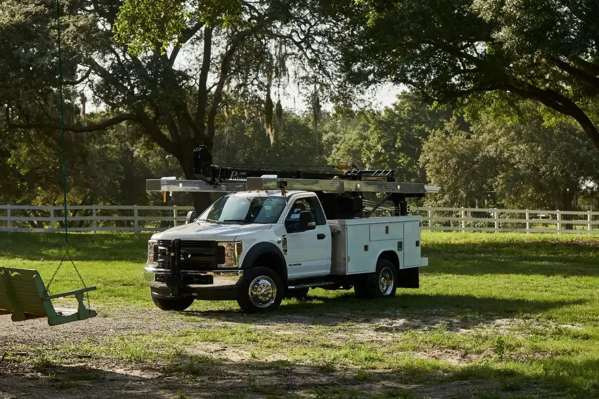

Well Pump & Water System Services in Apopka, FL
From a dead pump at 2 a.m. to rotten-egg water, one local team handles the whole system: the pump, the tank and controls, the well itself, and the water at your tap. Every service is available across Apopka and communities within about 25 miles.
What's going on with your well?
Pick what you're seeing and we'll point you to the right service. Not sure? Call, and we'll narrow it down over the phone before we come out.
Well pump repair & replacement
Most wells around Apopka are deep Floridan Aquifer wells, commonly 100 to 400 feet down, running submersible pumps. We test the pump, pressure switch, tank, control box and wiring with a meter, then repair what's actually broken.

Well Pump Repair
No water, low pressure, tripping breakers or a pump that won't shut off, diagnosed and fixed, usually in one visit.
- Meter-based diagnosis
- Pressure switches and control boxes
- Drop pipe and check valves
Well Pump Replacement
When a pump is truly done, we match the new one to your water and depth. A full replacement usually takes about three hours.
- Grundfos 2-wire up to 3 HP
- Franklin above 3 HP
- Built to last 18–20 years
Submersible Pump Repair
Deep-well submersibles pulled, tested and repaired or replaced, including motors, seals and cables.
- Deep Floridan Aquifer wells
- Scale-stuck pumps freed safely
- Wire and splice repair
Jet Pump Repair
Shallow and deep-well jet pumps that lose prime or can't hold pressure. We find the leak or failed foot valve.
- Loss-of-prime diagnosis
- Foot valve replacement
- Seal and impeller repair
Pressure tanks, switches & controls
The most common call we get is a pump that clicks on and off every few seconds. Nine times out of ten the pump is fine, and a tank or switch is the cheaper fix that protects it.

Pressure Tank Repair
Waterlogged bladder tanks and lost air charge fixed before rapid cycling burns out your pump motor.
- Air charge testing
- Bladder tank replacement
- Gauges and fittings
Pressure Switch & Control Box
Ants in the switch, surge-damaged contacts and failed control boxes, among the most common causes of a sudden outage here.
- Switch replacement
- Control box testing
- Lightning damage checks
Constant Pressure Systems
Variable-speed systems that hold steady pressure at every tap. We'll tell you honestly whether one fits your home or a bigger tank does.
- Variable-speed upgrades
- Honest fit assessment
- Tank-vs-system advice
Booster Pump Repair
Weak pressure upstairs or at far-away fixtures, solved with a booster pump that's diagnosed first and sized right.
- Booster repair and install
- Well and city water
- Right-sized, not oversized
Irrigation & commercial pumps
From a homeowner's sprinkler well to Apopka nurseries and Zellwood farms, we repair the high-demand pumps that run long cycles, along with the switches, panels and drop pipe that fail first.

Irrigation Pump Repair
Well-fed and lake-fed irrigation pumps for homes, HOAs, apartment communities, nurseries and growers.
- Switches and control panels
- Drop pipe and submersibles
- Lake intakes and prime loss
Centrifugal Pump Repair
Centrifugal pumps for irrigation, transfer and light commercial use, repaired and right-sized.
- Bearings and seals
- Prime and flow loss
- Right-sizing
Transfer Pump Repair
Pumps that move storm water, cistern water and on-site supply, fixed fast and ideally before the storm.
- Storm water and drainage
- Cisterns and tanks
- Pumps that won't shut off
Commercial & Agricultural
Well systems for nurseries, farms, churches, schools, parks, mobile-home and RV parks, and water features.
- High-volume systems
- Community wells
- Agricultural irrigation
Well repair, rehabilitation & abandonment
Sometimes the problem isn't the pump, it's the well. We repair the pipe, seal and casing that keep your water flowing and clean, and properly plug wells you no longer use.
Well & city water treatment
Central Florida well water often carries iron staining, sediment and a rotten-egg sulfur odor. We size whole-house treatment to your water, using aeration-based methods rather than chlorine for iron and sulfur.

Iron & Sulfur Removal
Rust stains and rotten-egg odor removed with multi-stage aeration and carbon, not chlorine.
- Whole-house systems
- Aeration and carbon
- Sized to your water
Water Softeners
Whole-house softeners with Clack WaterShield valves, sized to your hardness and household use.
- Hard-water scale control
- Well or city water
- Repair and replacement
City Water Treatment
Softening and chlorine or chloramine removal for homes on municipal water.
- Chlorine taste and odor
- Chloramine removal
- Whole-house carbon
Sediment Filtration & Testing
Sediment filters for sandy or cloudy water, and water testing so treatment fits what's actually in it.
- Sand and grit
- Cloudy water
- Test before we treat
No water right now?
We answer 24 hours a day, 365 days a year, and guarantee a 2-hour arrival on no-water emergencies. No upcharge for nights, weekends or holidays.
One honest price, one trip, one team
We don't quote blind over the phone or run teaser pricing. We come out, test your system with a meter, and give you one all-in price before any work starts. If we hit a snag after quoting, we absorb it.
Every service, across our service area
Based at 925 E Sandpiper St in Apopka and serving communities within about 25 miles across Orange, Seminole and Lake counties.
Not sure which service you need?
Describe what you're seeing and we'll narrow it down over the phone, then confirm the real cause on site.
407-625-5499Do you work on all types and brands of well pumps?
Yes. We repair submersible, jet, centrifugal, booster, transfer and irrigation pumps from all major brands. When we install new equipment, we typically use Grundfos and Franklin pumps matched to your water and depth.
How much does a well pump repair or replacement cost?
Every well is different, so we don't quote a flat price sight unseen. We test your system on site, then give you one firm, all-in price before any work starts. That number holds, with no add-ons.
Is it better to repair or replace my pump?
If your pump still delivers the water and pressure your home needs, a repair is the right call. We only recommend replacement when the system can no longer do its job, and we'll explain why.
Can you fix it in one visit?
Usually. Our trucks carry parts from pressure switches to complete pumping systems, so most repairs, and most full replacements, are finished the same visit. A replacement typically takes about three hours.
Do you work on commercial and agricultural systems?
Yes. We service nurseries, farms, churches, schools, parks, mobile-home and RV parks, apartment-complex irrigation and commercial water features, in addition to residential wells.
Do you treat city water as well as well water?
Yes. For city-water homes we install whole-house softening and chlorine or chloramine removal. For well water we treat iron, sulfur odor, hardness and sediment.

Tell us what's wrong. We'll take it from there.
Call any time, day or night, for a straight answer and a guaranteed 2-hour arrival on no-water emergencies.